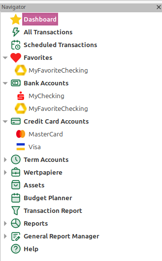
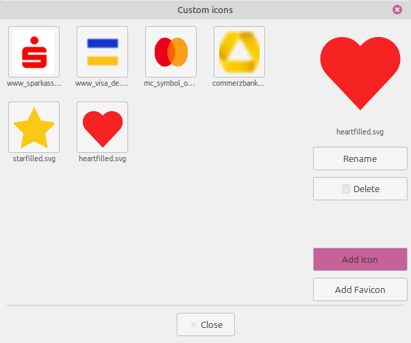
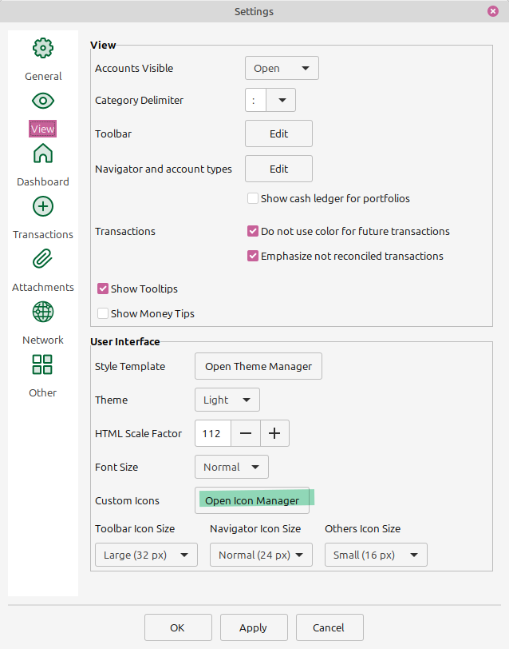
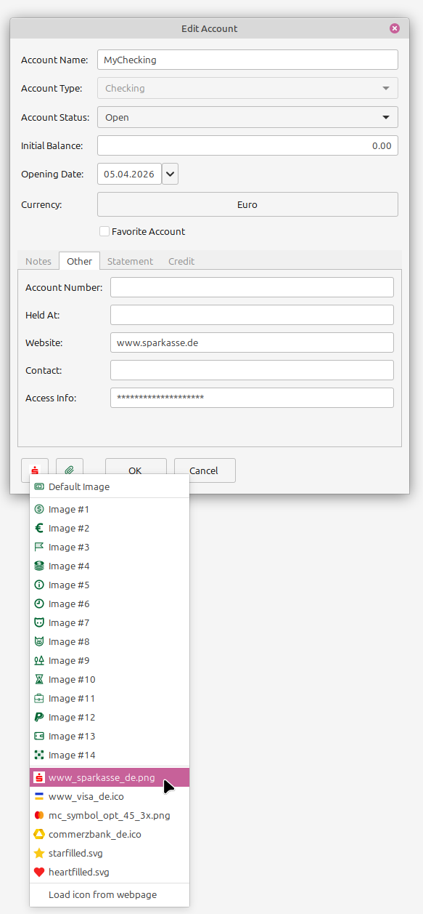
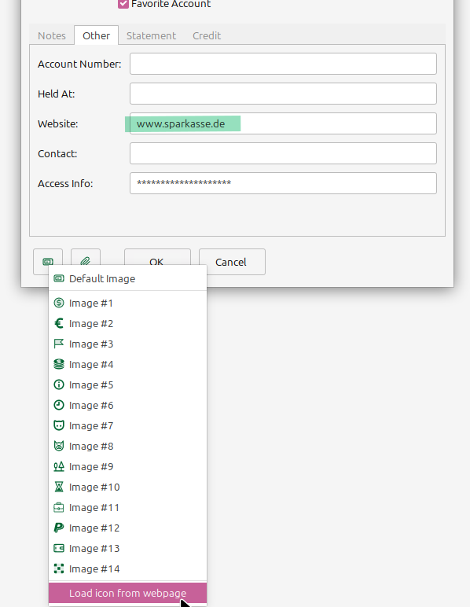
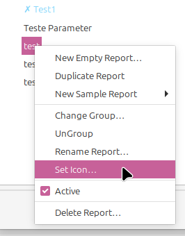
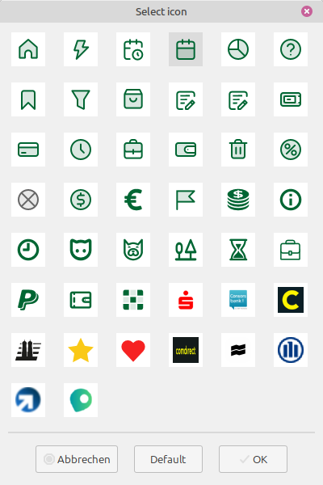

For a personal customization additional icons can be added to MMEX, which can be used instead of icons provided by the theme(s) in the navigator display:

As icons either the nav icons of a (banking) webpage can be directly imported, or icons from a local file can be added into the MMEX configuration.
For the management of custom icons an own icon management dialog as part of the settings is provided
The icon manager dialog allows to add custom icons to MMEX and to deleted unused ones.

The icon manager dialog is opened in the view panel of the settings menu Tools → Settings…:

Icons stored locally or downloaded can be added either with the Add Icon button, which opens a file selection dialog for icons, or by drag'n drop the icon file on the icon manager dialog.
Note: If the icon format is unsupported and/or unidentifiable, the icon can not be added.
A Favicon (e.g. from a banking page) can be directly loaded with the Add Favicon button, which opens dialog to enter the url to download from
Note: If the webpage uses an unsupported and/or unidentifiable icon format the download will fail, a corresponding message.
A downloaded icon is stored with the domain name of the url (dots replaced by underscores) and can be renamed in dialog with the Rename button or from the context menu of the icon. The same applies for icons added from local files, these are stored with there original file name and can be renamed in the icon manager dialog.
Note: The renaming only affects the icon storage, if the icon was already assigned to an account, the assignment has to be repeated with the new name.
All configured custom icons are available in the account edit dialog and can be selected in the same way like the theme icons:

If the account has a website configured, the option Load icon form webpage is available in the icon selection list, which allows to download and add the favicon directly:

All configured custom icons are available in the navigator configuration dialog and can be selected during editing of the navigator entry (see Navigator configuration and custom account types - 2.4 for details):
Within the GRM manager report tree, with a right click on a selected report, the context menu for the report has an Set icon option:

This opens an icon selection dialog, to assign an icon to an report:

An icon can be directly selected with a double click, or by marking it in the list and applying it with the OK button. The Default button removes a custom icon from the report.
The icon is used in the GRM manager tree and the navigator tree.